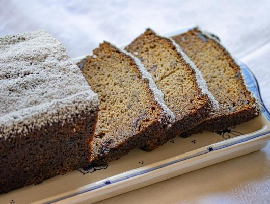

This recipe makes 2 loves which is great if you want to have one to snack on and give one to a family member or close person. The white chocolate chips with melt in your mouth while the cranberries add that little exrta pazaz to a timeless classic like banana bread.
| Ingriedients: | Amounts: |
|---|---|
| Granulated sugar | 2 Cups |
| Softened Unsalted Butter | 1 Cup |
| Bananas | 6 Ripe ones(around 3 Cups) |
| Eggs | 4 Well Beaten |
| Unbleached Flour | 2 1/2 Cups |
| Baking Soda | 2 Teaspoons |
| Salt | 1 Teaspoon |
| Vanilla | 1 Tablespoon |
| Dried Cranberries | 1 Cup |
| White Chocolate Chips | 1/2 Cup |